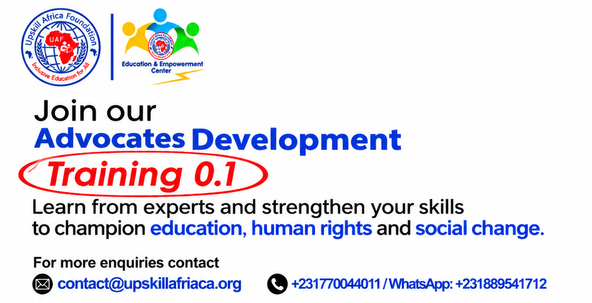

The Advocates Development Training 0.1 is a free online training by Upskill Africa Foundation (UAF). It equips emerging advocates with practical knowledge, ethics and skills to champion education, human rights and social change in their schools, communities and countries.
Emerging education advocates, human rights advocates, youth, journalists, and community and student leaders.
| Training dates | February 1 – 19 |
| Mode and location | Online via Google Meet. Join from anywhere. |
| Session times | Daily session times and the Google Meet link are shared with registered participants. |
| Final test / project | February 20 – 25 |
| Official graduation | February 26, Paynesville City, 10:00 AM – 1:30 PM. Participants on distance join the certification live. |
| Cost | The training is free. A payment of $10 USD is made for the T-shirt and certificate upon completion. |
Upskill Africa Foundation (UAF) works for Inclusive Education for All. UAF promotes access to education for underprivileged children, supports child protection, and empowers underserved households and parents. UAF is based in Booker's Town, Paynesville.